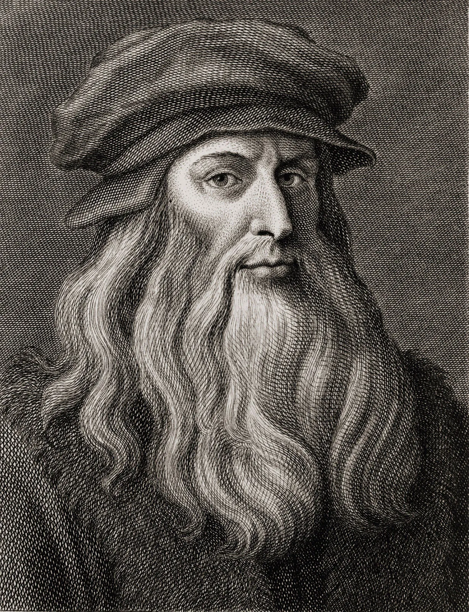

Leonardo da Vinci
Leonardo s-a născut în anul 1452, în micul sat Vinci din Italia, aproape de orașul Florența. El a copilărit la țară, în casa bunicilor săi, unde a petrecut mult timp observând natura și animalele. Deși nu a mers la o școală obișnuită, a fost un băiat extrem de inteligent și dornic să descopere singur cum funcționează lumea din jurul lui.
În adolescență, tatăl său l-a dus la Florența ca ucenic în atelierul unui mare maestru, Andrea del Verrocchio, unde și-a dezvoltat mintea creativă. Era un tânăr foarte curios, mereu cu un carnețel la el în care își nota gândurile, folosind o scriere secretă, de la dreapta la stânga, care se putea citi doar în oglindă.
De-a lungul vieții, a locuit în orașe importante din Italia, precum Florența, Milano și Roma, fiind apreciat de nobili și conducători puternici pentru inteligența sa. În ultimii ani ai vieții, a acceptat invitația regelui Francisc I și s-a mutat în Franța, unde a trăit liniștit la un castel până la moartea sa, în anul 1519.